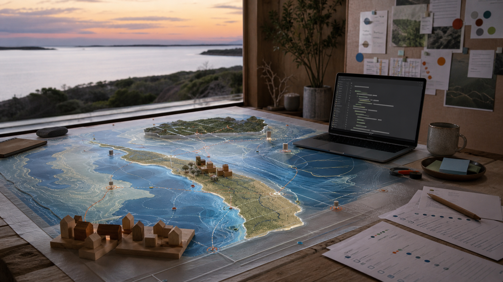
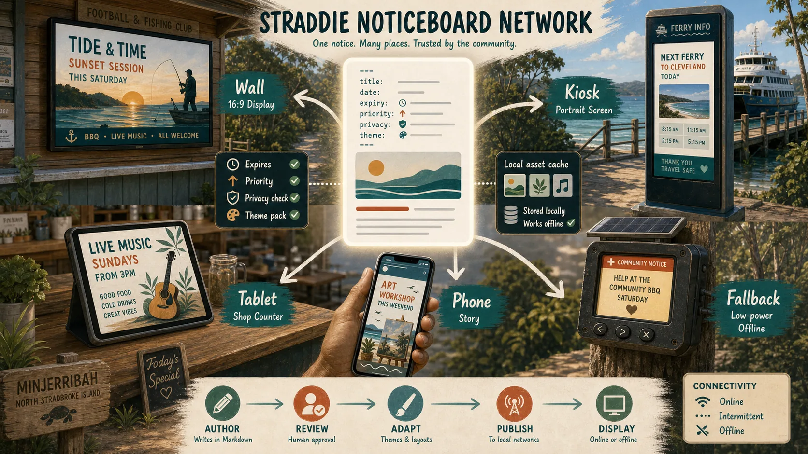
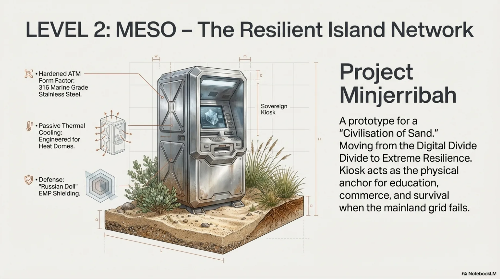

StraddieDigitalTwinBuilders
Plain-English questionnaires for turning rooms, venues, streets, island systems and the Moreton Bay watershed into .md prompt packets for visual generators, 3D world builders and simulation agents.
Gateway
Choose the scale. Get the right prompt.
Fill in a plain-English form for a room, bench, notice screen, ferry gateway, maker-space, kiosk, street, island or catchment. The form outputs a .md prompt packet for the right generator and the right level.
01
Level 0 to Level 2 (L0-L2) Architecture
Use Level 0 for a private scene. Use Level 1 for a local place. Use Level 2 for an island, bay or watershed simulation.
02Level 0 (L0) Private Space
Rooms, homes, objects, devices, capsule interiors and visual detail chosen by the person closest to the scene.
03Level 1 (L1) Place Mesh
Venues, streets, Ballow Road, maker-spaces, disaster kiosks, noticeboards and playable local scenes.
04Level 2 (L2) Bay / Watershed
Minjerribah, Moreton Bay, catchments, public fronts, ecological context and world-scale simulation controls.
05Prompt Builders
Use the working form to generate .md prompt packets for visual scenes, spaces, place worlds and simulation states.
06Family Network
Connect SSB, Strange But True, P4A, maker-space, disaster kiosks, noticeboards, Ballow Road, capsule compute and space-health support paths.
Why this exists
Plain inputs. Clear simulation outputs.
Enter the scene, view, style, moving parts, customisation controls and sovereignty settings. The builder outputs a prompt packet a visual generator, 3D world builder or simulation agent can follow.
Starter outputs
Pick a scene. Fill the form. Generate the prompt.
Each card gives a clear input and output. The builder turns local Straddie context into a prompt packet for visual generation, world building or simulation.

Maker-space prompt
Input tools, materials, repair flow, camera angle and style. Output a workshop simulation prompt.
Build a scene prompt
Noticeboard to screen
Input notice text, expiry, screen type and fallback mode. Output a screen mock-up or kiosk prompt.
Trace the network
Disaster kiosk rehearsal
Input screens, power, offline fallback and source-labelled emergency info. Output a readiness simulation prompt.
Open Level 1 (L1) places